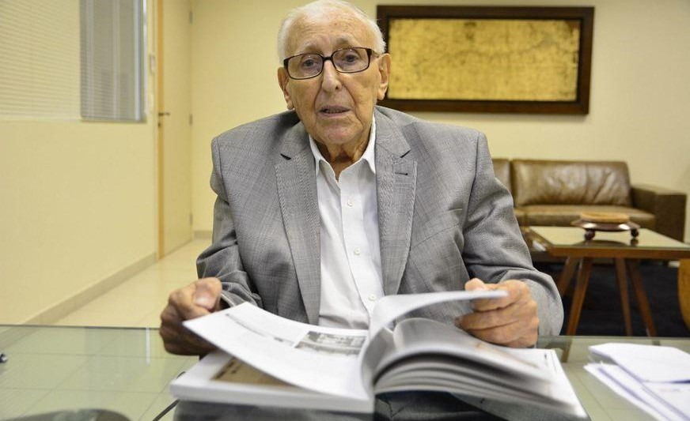

Moysés Banarrós Israel

Biografia
Moysés Benarrós Israel nasceu em 10 de fevereiro de 1924, na cidade de Belém, no estado do Pará. Filho de Salomão Benarrós Israel e Carlota Benayon Israel, cresceu em um ambiente familiar marcado por valores de trabalho e dedicação, e desde cedo, demonstrou um espírito empreendedor e uma determinação marcante, qualidades que moldaram sua trajetória pessoal e profissional. Ainda jovem, Moysés mudou-se para Manaus, onde deu início à sua trajetória profissional ao lado de seu tio, Isaac Sabbá, um dos grandes visionários da economia regional.
Isaac Sabbá foi responsável pela construção da Refinaria de Petróleo de Manaus, a primeira do estado do Amazonas, um marco que simbolizou o início da industrialização na região. Essa experiência inicial no setor industrial consolidou Moysés como uma figura de liderança nos negócios e abriu portas para suas futuras realizações.
Guiado pelo mesmo espírito empreendedor do tio, Moysés Israel construiu sua própria confiança como um líder empresarial e social no estado do Amazonas. Sua visão é além dos negócios, abrangendo o desenvolvimento econômico sustentável e a melhoria das condições de vida para a população local. Ele foi um defensor fervoroso da educação e da cultura, apoiando a importância desses pilares para o progresso social do Amazonas.
Ao longo de sua vida, Moysés Israel esteve diretamente envolvido em iniciativas que transformaram a realidade de cidades como Itacoatiara. Entre suas iniciativas mais notáveis, estão as doações de terrenos para a instalação de instituições educacionais de grande relevância, como a Universidade Federal do Amazonas (UFAM), a Universidade do Estado do Amazonas (UEA) e o Centro de Educação Tecnológica do Amazonas (CETAM), consolidando seu compromisso com o avanço da educação no interior do estado, onde seu nome permanece como um símbolo de progresso e generosidade.
Moysés Benarrós Israel faleceu em 2016, mas seu legado permanece vivo por meio das instituições e projetos que ajudou a construir. Sua contribuição vai além do impacto econômico; ele será sempre lembrado como um visionário que acreditou no potencial da educação, na força da cultura e no poder do desenvolvimento social para transformar vidas. Sua história inspira novas gerações e reforça a importância do compromisso com o desenvolvimento coletivo.